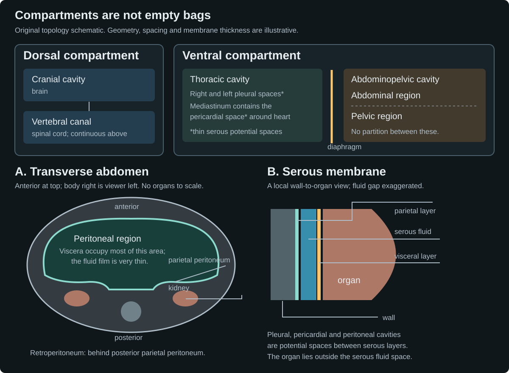

Body orientation and compartments
 The body's right is the observer's left in the anterior view. A median sagittal plane divides right from left; a frontal plane divides anterior from posterior; a transverse plane divides superior from inferior. The parametric male MPFB exterior uses official skin and fitted eye assets. It is a generic anatomical reference, with artistic optics and no identified patient or measured physiology.
The body's right is the observer's left in the anterior view. A median sagittal plane divides right from left; a frontal plane divides anterior from posterior; a transverse plane divides superior from inferior. The parametric male MPFB exterior uses official skin and fitted eye assets. It is a generic anatomical reference, with artistic optics and no identified patient or measured physiology.
Broad body compartments contain organs. Serous cavities are thin fluid potential spaces between parietal and visceral membranes; organs lie outside that fluid space. Kidney symbols sit behind the posterior parietal peritoneum. All internal diagrams are original schematics, separate from the exterior model.Geometry and appearance: MPFB 2.0.18 and official makehuman_system CC0 assets; Blender 5.2.1. Anatomy references: OpenStax1.6 and Selcuk et al.,2018. No reference illustrations reused. The parametric surface and separate topology schematics are distinct evidence types; neither is a measured internal section.